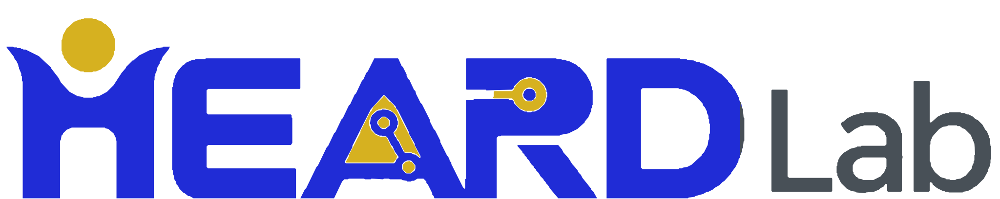
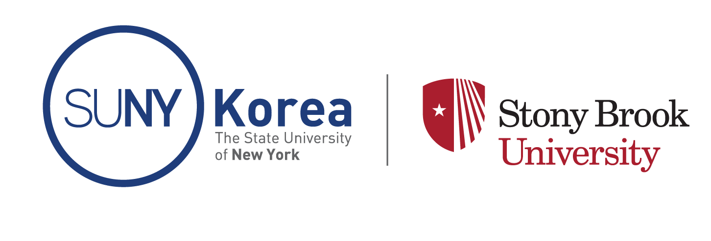

Meet the people advancing human-centered robotics, biomechanics, and intelligent engineering design.
Meet Jeonghan Yu and explore her research and academic experience.
Meet the researchers, students, and collaborators of HEARD Lab.